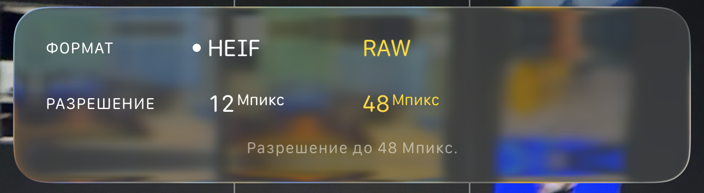

iPhone ProRaw и HEIF
Настройки
В Pro версии (с 12-го ) iPhone доступна съёмка фото в формате ProRaw и съёмка видео в формате ProRes.
Настройки --> Камера --> Форматы --> Включить Apple ProRaw
Экспорт фото с iPhone
I вариант - через приложение "Фото"
Фото --> Медиатека --> Выделить нужное фото --> Верхняя панель --> Файл --> Экспорт
Доступно 2 режима экспорта:
-
ОБЫЧНЫЙ ЭКСПОРТ (со сжатием)
- доступные форматы (HEIC, JPEG, TIFF, PNG). Raw-файлы будут конвертироваться в JPEG.
- геопозиция в мета-данных (стоит отдельная галочка)
- цветовой профиль (sRGB, AdobeRGB, Display P3, Оригинал)
-
ЭКСПОРТИРОВАТЬ ОРИГИНАЛ без изменений (подходит для RAW-файлов), чтобы экспортировался оригинальный файл
.DNGБудет такой же размер файлов как и на iPhone (без сжатий)
II вариант - через AirDrop
Фото --> Медиатека --> Выбрать --> Выделить нужное фото --> Иконка поделиться --> AirDrop --> Выбрать устройство --> Подтвердить на устройстве, если требуется
При этом способе файлы фотографий будут передаваться в уже сжатом виде, в таком если бы мы экспортировали по I-му варианту через обычный экспорт. При этом все RAW-файлы будут переконвертированы в jpeg. Этот вариант не подходит, если нужно передать RAW-файлы.
III вариант - через iMazing
iPhone --> Данные --> Фото --> Копируем и вставляем
При этом способе файлы фотографий также будут передаваться в уже сжатом виде, в таком если бы мы экспортировали по I-му варианту.
IV вариант - через iCloud (icloud.com)
Этот вариант для случая, если нужно экспортировать фото на не Apple устройство (например в Windows). Чем-то похож на облачный iMazing.
Фото --> Выделяем фото --> Кликаем на иконку выгрузки из облака
Будет скачан zip-архив в директорию загрузок. При этом способе файлы фотографий также будут передаваться в уже сжатом виде, в таком если бы мы экспортировали по I-му варианту.
Шаринг фото из iCloud по ссылке
Открываем приложение Фото на Mac OS --> Выбираем фото из медиатеки --> Поделиться --> Скопировать ссылку iCloud
Будет создана url-ссылка, которая будет активна в течение месяца
Обработка ProRaw
- Во встроенном редакторе приложения "Фото" на iOS. Если нужно быстро отредактировать "прямо на устройстве". HDR сохранеяется.
- Во встроенном редакторе приложения "Фото" на Mac OS. (
Открытьфото в медиатеке -->Редактировать). HDR сохранеяется. - В Adobe
Lightroomкак обычную raw-фотографию (проблемы с экспортом HDR, настройки сохраняются, а HDR нет). HDR не сохранеяется.
Ещё редакторы
ProRaw файлы можно обрабатывать в:
- Adobe Photoshop
- Capture One
- Affinity Photo
- Darkroom
- Другие RAW-редакторы
Что такое ProRaw

ProRaw (Pro RAW) — это формат, разработанный Apple, который объединяет преимущества RAW-файлов с обработкой изображения, применяемой в стандартных JPEG/HEIC фотографиях на iPhone.
- 12-битная глубина цвета (в отличие от стандартных 8-битных JPEG)
- Сохранение всех данных сенсора без потерь
- Применение вычислительной фотографии Apple (Smart HDR, Deep Fusion, Night Mode)
- Формат файла:
.DNG(Digital Negative) - Размер файла: примерно 25-75 МБ на фотографию (зависит от модели iPhone)
Преимущества
- Максимальная гибкость в пост-обработке
- Расширенный динамический диапазон д�ля восстановления пересветов и теней
- Коррекция баланса белого без потерь качества
- Точная настройка экспозиции в редакторе
- Сохранение деталей в тенях и светах
Недостатки
- Очень большие файлы (25-75 МБ)
- Медленная обработка при съёмке серий
- Занимает много места на устройстве
- Требует постобработки для оптимального результата
Рекомендации по использованию
- Использовать для важных снимков, где нужна максимальная гибкость редактирования
- Использовать при сложном освещении (контровый свет, высокий контраст)
- Использовать для профессионал�ьной фотографии
- Не использовать для быстрых снимков, селфи или обычных ежедневных фото
Сравнение форматов HEIF и DNG
HEIF (High Efficiency Image Format, .heic)
HEIF (также известный как HEIC) — формат, который iPhone использует по умолчанию для фотографий начиная с iOS 11.
Характеристики HEIF
- Формат файла:
.heic(High Efficiency Image Container) - Глубина цвета: 8-бит или 10-бит
- Сжатие: С потерями (lossy), но более эффективное чем JPEG
- Размер файла: ~2-5 МБ на фотогр�афию (зависит от модели и сцены)
- Применение вычислительной фотографии: Да (Smart HDR, Deep Fusion, Night Mode)
- Обработка: Применяется автоматически при съёмке
- Совместимость: Отличная поддержка на iOS/macOS, ограниченная на других платформах
Преимущества HEIF
- Малый размер файла при хорошем качестве
- Высокая эффективность сжатия (лучше чем JPEG на ~50%)
- Поддержка HDR и расширенного динамического диапазона
- Быстрая обработка при съёмке
- Готов к использованию без постобработки
- Поддержка Live Photos и других функций iPhone
Недостатки HEIF
- Сжатие с потерями — необратимая потеря данных
- Ограниченная гибкость в постобработке
- Сложнее восстановить пересветы и тени
- Ограниченная совместимость на Windows и других платформах
- Коррекция баланса белого с потерей качества
DNG (Digital Negative) / ProRaw
DNG — формат, используемый для ProRaw фотографий на iPhone Pro моделях.
Характеристики DNG
- Формат файла:
.dng(Digital Negative) - Глубина цвета: 12-бит
- Сжатие: Без потерь (lossless) или с минимальными потерями
- Размер файла: ~25-75 МБ на фотографию
- Применение вычислительной фотографии: Да (Smart HDR, Deep Fusion, Night Mode)
- Обработка: Применяется частично, сохраняя гибкость для дальнейшей обработки
- Совместимость: Отличная поддержка в профессиональных редакторах
Поддержка HDR в DNG
Да, DNG поддерживает HDR (High Dynamic Range) несколькими способами:
-
Расширенный динамический диапазон
- DNG сохраняет все данные сенсора с расширенным динамическим диапазоном
- 12-битная глубина цвета позволяет захватывать больше деталей в тенях и светах, чем 8-битные форматы
- Это позволяет восстанавливать пересветы и тени при постобработке
-
Smart HDR в iPhone
- При съёмке в ProRaw на iPhone применяется Smart HDR
- iPhone делает несколько снимков с разной экспозицией и объединяет их в один DNG файл
- Результат сохраняется с расширенным динамическим диапазоном
-
HDR в постобработке
- DNG файлы можно использовать для создания HDR изображений при постобработке
- Можно объединить несколько DNG снимков с ра�зной экспозицией в один HDR файл
- Профессиональные редакторы (Lightroom, Photoshop, Capture One) поддерживают HDR-обработку DNG файлов
-
Отличие от HDR в HEIF
- В отличие от HEIF, где HDR применяется автоматически и финализируется при съёмке
- DNG сохраняет сырые данные с расширенным динамическим диапазоном
- Это даёт больше контроля над HDR-обработкой в редакторе
Итог: DNG не только поддерживает HDR, но и предоставляет максимальную гибкость для работы с расширенным динамическим диапазоном благодаря сохранению всех данных сенсора без потерь.
Преимущества DNG
- Максимальная гибкость в постобработке
- Без потерь данных — сохранение всех данных сенсора
- Расширенный динамический диапазон для восстановления деталей
- Коррекция баланса белого без потерь качества
- Стандартный формат для профессиональной фотографии
- Универсальная совместимость с RAW-редакторами
Недостатки DNG
- Огромные размеры файлов (в 10-30 раз больше HEIF)
- Требует постобработки для оптимального результата
- Медленная обработка при съёмке серий
- Занимает много места на устройстве
- Не подходит для быстрой съёмки
Сравнительная таблица
| Характеристика | HEIF (.heic) | DNG (.dng) / ProRaw |
|---|---|---|
| Размер файла | ~2-5 МБ | ~25-75 МБ |
| Глубина цвета | 8-бит / 10-бит | 12-бит |
| Сжатие | С потерями | Без потерь |
| Гибкость редактирования | Ограниченная | Максимальная |
| Восстановление пересветов/теней | Ограниченное | Отличное |
| Поддержка HDR | Да (финализированное) | Да (сырые данные) |
| Скорость съёмки | Очень быстрая | Медленная |
| Готовность к использованию | Готов сразу | Требует обработки |
| Совместимость iOS/macOS | Отлично | Отлично |
| Совместимость Windows | Ограниченная | Отлично |
| Профессиональные редакторы | Ограниченная поддержка | Полная поддержка |
| Вычислительная фотография | Да | Да |
| Рекомендуется для | Ежедневные фото | Профессиональная съёмка |
Когда использовать HEIF
- Ежедневные фотографии
- Селфи и портреты
- Быстрая съёмка
- Социальные сети
- Когда важно сэконом�ить место
- Когда не планируется постобработка
Когда использовать DNG (ProRaw)
- Профессиональная фотография
- Важные снимки
- Сложное освещение (контровый свет, высокий контраст)
- Когда нужна максимальная гибкость в редактировании
- Коммерческие проекты
- Когда качество важнее размера
Фокусные расстояния
На iPhone обычно 2–3 камеры с разными фокусными расстояниями:
- Ультраширокоугольная (обычно ~13–14 мм эквивалент)
- Основная/широкоугольная (обычно ~24–26 мм эквивалент)
- Телефото (обычно ~52–77 мм эквивалент, если есть)